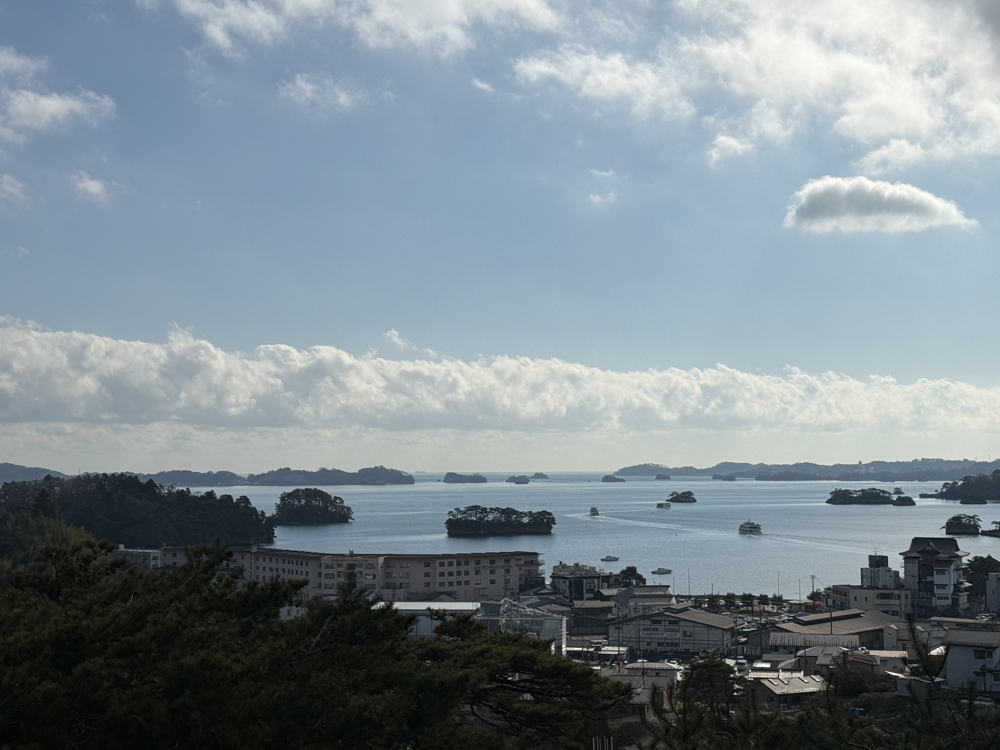
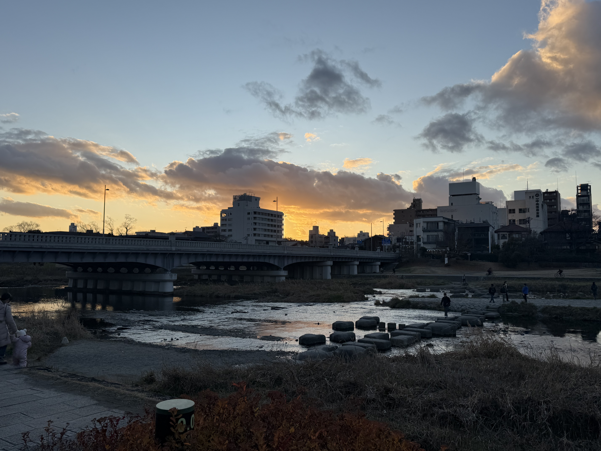
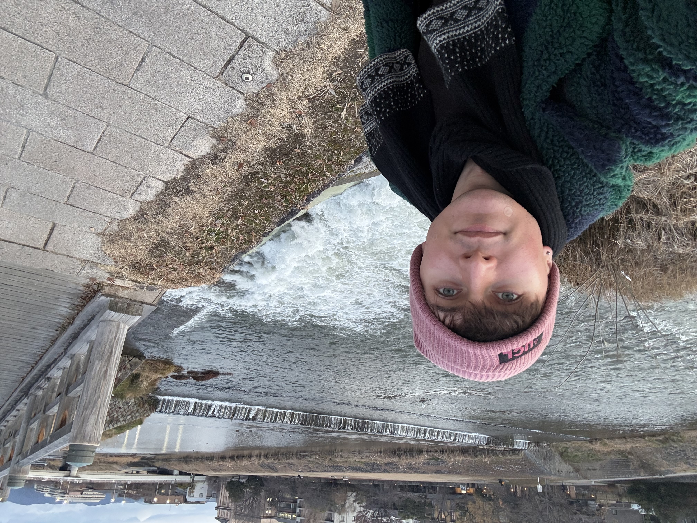
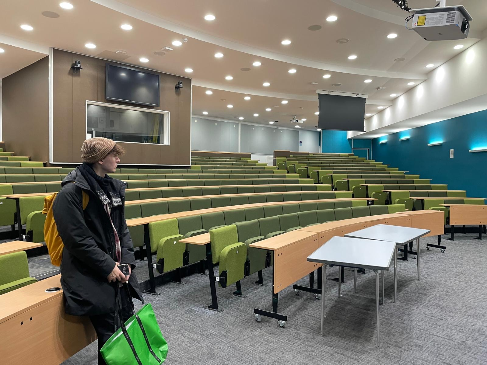
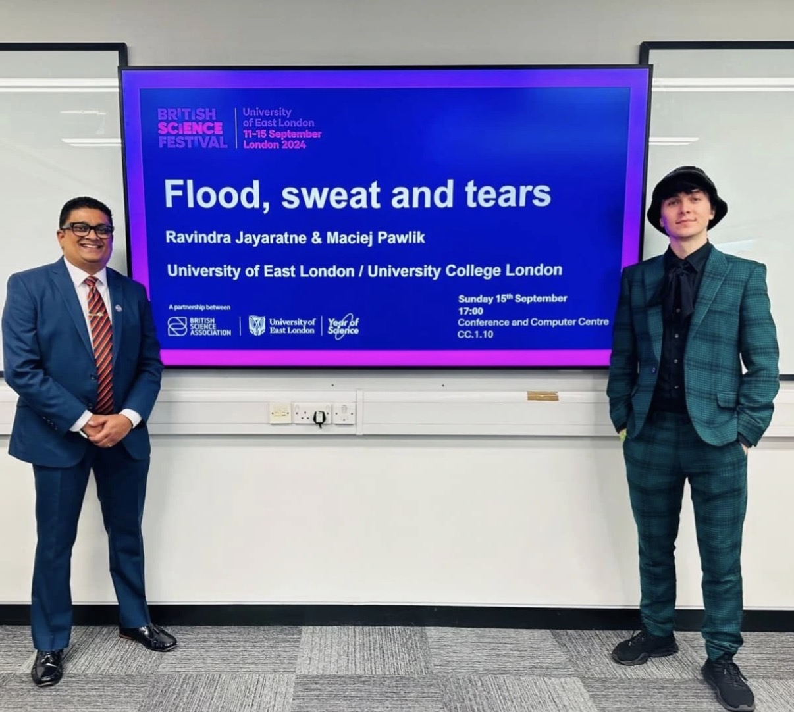
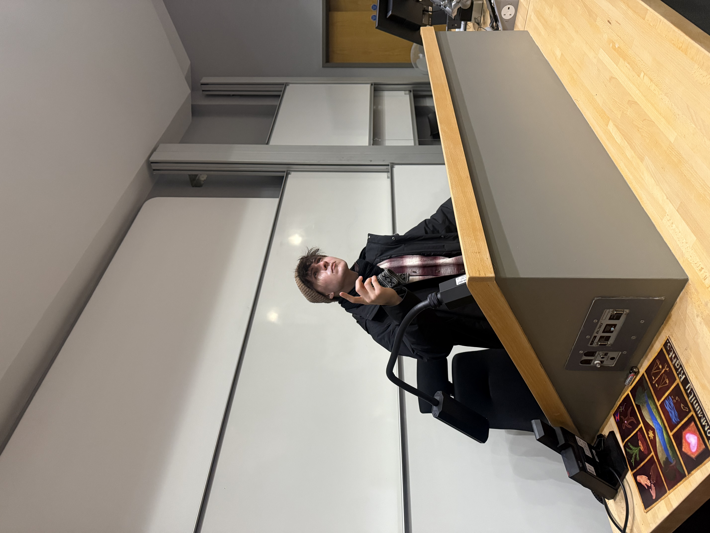
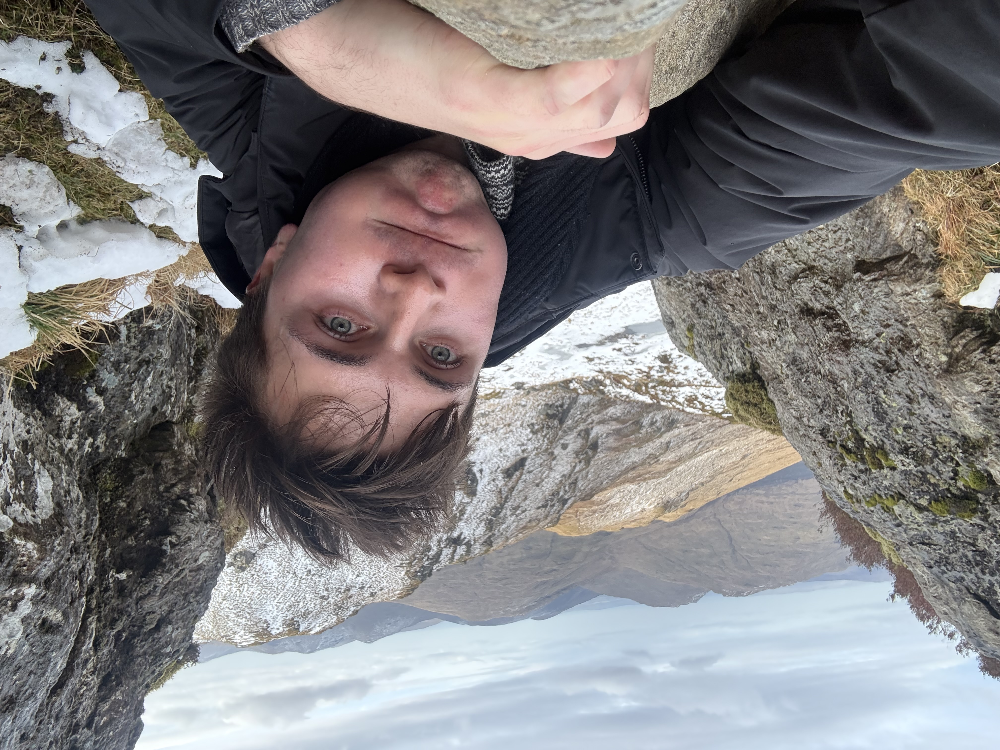

38.37°N 141.06°EMatsushima Bay
Japan
Reflecting on coastal water systems and the safety provided by the hundreds of pine islands that serve as natural barriers to storms and tsunamis.

Research & Publications
First-author, top-tier publications spanning disaster risk reduction, human–nature interaction, nature-based solutions, and disaster education.
Four published, three under review. Titles link to the full paper where it's out.
Island Studies Journal. M. Pawlik
IDRiM Journal. M. Pawlik & G Dewi Narwastuti
People and Nature. M. Pawlik
Disaster Prevention and Management. M. Pawlik
Sustainability. M. Pawlik & K. Kitagawa
International Journal of Disaster Risk Reduction. M. Pawlik et al.
International Journal of Disaster Risk Reduction. M. Pawlik et al.
£55,000 in competitive funding for fieldwork and impact.
£50,000
University of East London, 2023 to 2024
£2,500
Great Britain Sasakawa Foundation, 2025 to 2026
£2,500
British Association for International & Comparative Education, 2025 to 2026
Coasts, rivers and mountains in Japan and Scotland.

38.37°N 141.06°EJapan
Reflecting on coastal water systems and the safety provided by the hundreds of pine islands that serve as natural barriers to storms and tsunamis.
Japan
Riverine water systems, traditional ecological knowledge, and the cultural dimensions of disaster preparedness in historic Japan.
 56.21°N 4.81°W
56.21°N 4.81°WScotland, UK
Tracing water sources in the mountains, reviewing land topography to better understand human-nature interactions.
What a research week actually looks like.




